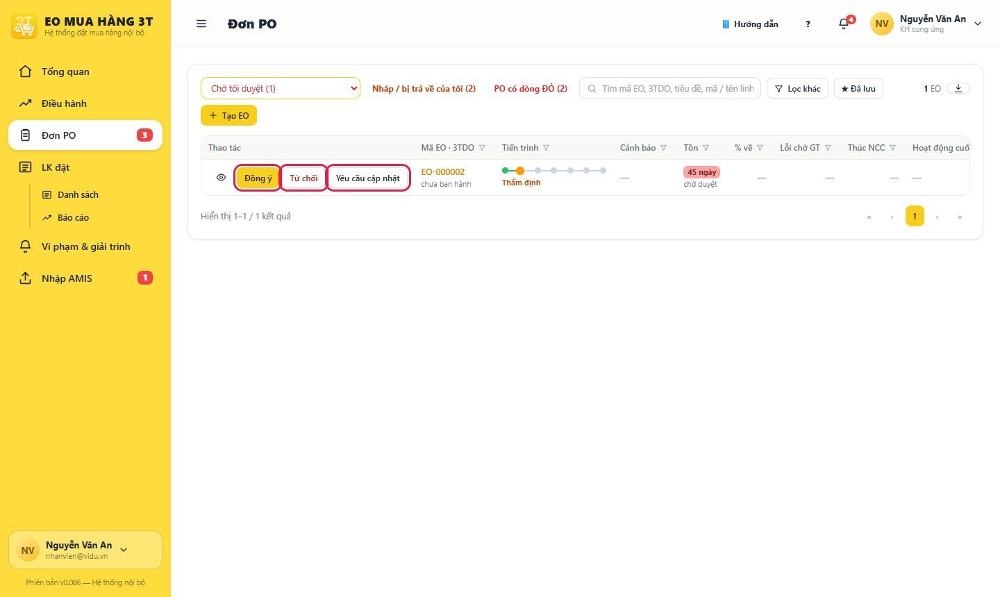
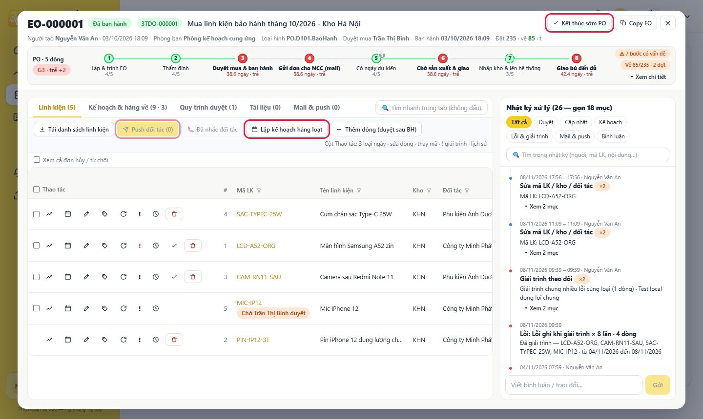

✅ Hướng dẫn cho người duyệt
Người thẩm định (bước G2) · người duyệt mua (bước G3). Mỗi PO được gán đích danh người duyệt — chỉ người được gán mới thấy nút duyệt.
Hạn mặc định mỗi bước duyệt: 24 giờ làm việc. Quá hạn, phiếu của bạn hiện ở Điều hành › Duyệt đang treo kèm số giờ chờ và tên bạn — lãnh đạo nhìn thấy.
1. Tìm PO đang chờ bạn duyệt
- Số đỏ cạnh menu Đơn PO = số phiếu đang chờ bạn.
- Vào Đơn PO → bấm nhóm chữ đỏ Chờ tôi duyệt (n) trên thanh lọc.
- Danh sách chỉ còn PO chờ bạn, nút duyệt nằm ngay trên dòng.

2. Xem kỹ trước khi duyệt
- Bấm 👁 hoặc bấm dòng → popup PO.
- Tab Linh kiện: mã, SL, kho, đối tác, lý do phát sinh. Bấm mã LK → lịch sử đặt mã đó (có đang đặt trùng ở PO khác không, NCC giao có đúng hẹn không).
- Tab Tài liệu: file đính kèm. Tab Quy trình duyệt: ai đã thẩm định, ý kiến.

3. Ra quyết định
| Nút | Kết quả |
|---|---|
| Đồng ý | Thẩm định: sang bước tiếp (khi mọi người thẩm định đã đồng ý → chuyển người duyệt mua). Duyệt mua: ban hành, cấp mã 3TDO-…, bắt đầu theo dõi hàng về. |
| Yêu cầu cập nhật | Trả về người lập để sửa (ghi rõ cần sửa gì). PO về nháp. |
| Từ chối | Dừng PO (ghi lý do). |
Bấm đúp hoặc 2 người duyệt cùng lúc không tạo 2 mã 3TDO — app tự chặn.
4. Duyệt dòng thêm sau ban hành
Người đặt hàng thêm linh kiện vào PO đã ban hành → dòng chờ người duyệt mua của PO. Trên Đơn PO, dòng PO có nút n dòng chờ duyệt; cột Tiến trình hiện mốc "Duyệt mua · n dòng".
- Bấm n dòng chờ duyệt → popup PO, dòng chờ có nhãn "Chờ … duyệt".
- Duyệt hoặc từ chối từng dòng (từ chối bắt buộc lý do, dòng bị hủy SL 0).